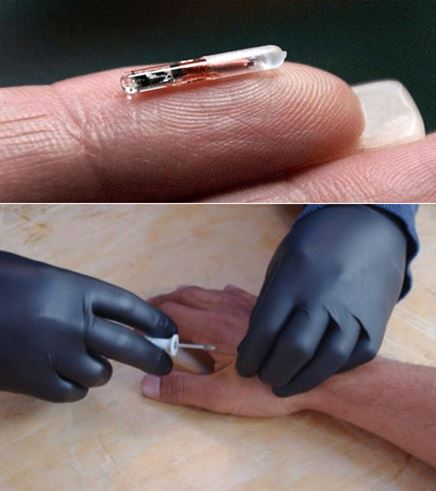

« La propagande sert davantage à nous justifier nous-mêmes qu’à convaincre les autres; plus nous avons de raisons de nous sentir coupables, et plus fervente sera notre propagande. » (Eric Hoffer, The True Believer: Thoughts on the Nature of Mass Movements)
Dans Le Maître et Marguerite, le chef-d’œuvre de Mikhaïl Boulgakov, le Diable apparaît en personne sous la cape du magicien Woland. Le Diable est joueur: il s’amuse à tester la vanité et la crédulité des hommes. Et il sait qu’il n’est d’humains plus crédules que les incrédules de métier. C’est ainsi que son premier interlocuteur, Berlioz, vedette littéraire du Moscou soviétique et athée militant, finira décapité par un tramway, exactement comme le magicien le lui a prédit. Ah ! S’il avait un seul instant pris au sérieux l’existence du Tentateur qui venait, justement, de lui offrir une cigarette…
DES BLAGUES À NE PAS FAIRE EN SOCIÉTÉ
« Qu’est-ce que le Système ? » me demandent sans cesse les idiots utiles du Système. (Tweet, 5.2.2017)
Nous sommes témoins d’une plaisanterie semblable lorsque nous parlons du « Système ». Il m’arrive ainsi de lancer des aphorismes à ce sujet dont les échos sont connus d’avance : « Complotiste ! », me répliquent aussitôt des sceptiques venus de divers horizons culturels et politiques, mais qui ont généralement en commun un binôme de caractéristiques paradoxal: d’un côté, la foi dans le rationalisme et le « fact-checking », et de l’autre des convictions morales et politiques d’une naïveté extrême. Ils s’attribuent à la fois une haute capacité de discernement, une mission de « vigilance citoyenne » et une position critique vis-à-vis du pouvoir. Dans le langage ras-du-sol des services, ce sont de parfaits idiots utiles.
L’idiot utile est celui qui croit qu’il ne croit pas ce qu’il croit, mais qu’il le sait. Que sa subjectivité n’y est pour rien. Que sa connaissance ne lui vient pas par un quelconque canal d’influence ou d’endoctrinement, mais de la vérité des choses elle-même. Sans filtre. Sans intermédiaire. Sans diable ni système.
Le Système, selon eux, n’existe pas. Ou, s’il existe, il n’a ni malice ni intention particulière. Il fait partie du paysage comme le climat ou la course des astres et obéit aux décrets des institutions comme la charrue au laboureur. Ce qui existe, pour cette catégorie d’esprits, c’est l’« Antisystème », à savoir tous ces milieux étranges et « sulfureux » qui, sous couvert de « résistance » contre un spectre de leur invention, complotent pour renverser la démocratie. Quelquefois, souvent même, ces innocents décrètent que le Système, c’est justement ça : l’Antisystème. Tout comme les étiquettes, les causes et les effets s’intervertissent facilement. Pour que l’« Antisystème » soit moralement condamnable, pour qu’on puisse le censurer et le liquider sans états d’âme, il est nécessaire que sa cause soit une illusion. Mais entre ces deux termes, lequel découle de l’autre ? La nécessité de bâillonner l’opposition à cause de ses mensonges, ou la nécessité de prouver que ses vues sont des mensonges afin de la bâillonner ?
C’EST CELUI QUI DIT QUI EST !
Les comploteurs dénoncent les complotistes. Quoi de plus normal? (Tweet, 31.1.2017)
Et de même: où se situe le crime de complot, si complot il y a ? La divulgation massive, par WikiLeaks, des e-mails de Mme Clinton et de son entourage montre que la direction du parti Démocrate avait été accaparée par des gens qui, littéralement, passaient leur temps à comploter en coulisses: contre la Libye, pour la destruction de l’enseignement et de la conscience civique, pour les intérêts du complexe militaro-industriel, et j’en passe. Le déchaînement même du milieu médiatico-politique face à cette divulgation montre que les tractations secrètes avec des agents d’influence sans investiture démocratique sont un mode de gouvernement admis et protégé. Ainsi le complot a-t-il été attesté comme une réalité indiscutable et omniprésente par ses protagonistes et défenseurs mêmes! Mais par un extraordinaire renversement rhétorique, le crime de complot a été rejeté sur ceux qui, justement, le dévoilaient au grand jour — ainsi que sur leurs hypothétiques alliés russes (car le mot «russe» est un utile déclencheur réflexe qui associe immédiatement à l’espionnage, à la propagande et à la désinformation). En effet, le seul moyen de berner le public et de détourner son attention du complot indiscutable qu’il avait sous les yeux était de pointer du doigt un complot bien plus menaçant, d’autant plus menaçant qu’on ne pouvait en montrer qu’une ombre: celui liant Poutine à Trump via Julian Assange !
Et voici donc les comploteurs devenus complotistes à leur tour en dénonçant le complot des complotistes visant à faire éclater leur propre complot!
On pourrait étendre ce jeu de miroirs à l’infini. Ce qu’il reflète fondamentalement est très simple et vieux comme le monde: les rapports de force entre l’ordre établi et l’opposition, entre le discours du pouvoir et sa contestation. Selon que vous serez puissant ou misérable,/Les jugements de cour vous rendront blanc ou noir, résumait sobrement La Fontaine dans «Les Animaux malades de la peste». OU Blaise Pascal, dans ses Provinciales, s’adressant à ses adversaires jésuites d’une mauvaise foi criante: «Vous êtes quatre-vingt docteurs, mes bons Pères, et je suis seul. Vous avez forcément raison!» (Je cite de mémoire.)
Voilà donc le billard à mille bandes réduit à un vulgaire jeu de quilles: celui qui tient en main la grosse boule est en position de faucher les autres, un point c’est tout. Or, quoi qu’il arrive, la main qui tient la boule est celle du Système. Les quilles peuvent être blanches, jaunes, vertes ou rouges, elles peuvent être «de gauche» ou «de droite», mais le choix à l’échelon des existences se ramène à cela: il y a ceux qui lancent la boule et ceux qui attendent d’être fauchés ou épargnés par le projectile.
POURQUOI TOUS CES FAISCEAUX?
« Une intelligentsia dominante, que ce soit en Europe, en Asie ou en Afrique, traite les masses comme une matière première qu’on peut soumettre à expérimentation, manipuler et gaspiller à volonté.» (Eric Hoffer, The Temper of Our Time, 1967)
Le mot système vient du verbe grec systeô, qui signifie attacher ensemble, entrelacer. En politique, le système est souvent représenté par des faisceaux : les convergences d’énergies tenues ensemble par le pouvoir central. On pense machinalement à Rome ou au fascisme italien. On oublie que ces mêmes faisceaux sont aussi sur les armoiries de la présidence française.
Le Système, c’est le fascisme absolu, l’ordre en soi, tel qu’il se maintient et se perpétue, abstraction faite de l’idéologie et des justifications qu’il se donne. Il prend de plus en plus d’autonomie à mesure que la société humaine se technicise et se complexifie, en cela même qu’il exclut les impondérables du facteur humain tels que le libre arbitre, le bon vouloir, la vindicte ou la clémence.
La meilleure définition du mot tel qu’il nous intéresse ici a été donnée par Pontus de Thyard au XVIe siècle : «Ensemble dont les parties sont coordonnées par une loi». La loi est au centre.
Le Système règne quand aucune volonté humaine, aucune loi morale ne peut se hisser publiquement au-dessus de la loi écrite. Sur le plan officieux, il en va tout autrement: plus la loi publique est rigoureuse, et plus les dérogations octroyées aux satrapes sont généreuses. Plus le commun est jugulé, et plus la nomenklatura s’auto-absout. Il suffit d’observer la classe politique pour s’en convaincre.
Encore faut-il que ce que nos yeux voient puisse — ose — remonter jusqu’au cerveau et que celui-ci en tire des conclusions. C’est une étape que le Système s’emploie à désactiver en criblant de tabous le discours public avec l’aide cruciale du dispositif de l’instruction et des médias. Il aura fallu un dressage rigoureux pour enseigner aux consciences contemporaines à craindre l’invocation même du « Système » et à censurer ceux qui en parlent. La crédulité est l’un des éléments clefs de ce dressage. On apprend à admettre n’importe quelle affirmation, pourvu qu’elle vienne d’une source autorisée. Par exemple, qu’une simple grippe saisonnière est une menace pour l’humanité ou qu’un avion de ligne détourné par des pilotes amateurs peut faire crouler un gratte-ciel sans même le toucher. Cette crédulité implique à la fois de l’ignorance (en matière scientifique et logique) et de l’obéissance. Ce qui, à l’aube de la conscience éclairée, était considéré comme des tares à déraciner est devenu aujourd’hui des vertus «démocratiques» que les ingénieurs sociaux entretiennent.
« Nous avons tous été assez satisfaits de dégrader le gouvernement, de laisser tomber le civisme et en général de conspirer à produire des citoyens ignares et obéissants » écrivait ainsi en mars dernier Bill Ivey, le « monsieur Culture » de Bill Clinton, à John Podesta, le chef de campagne de Mme Clinton. Ces agents d’influence étaient encore, en mars 2016, ceux qui tenaient la boule du jeu de quilles. Ils étaient au cœur du système, si certains de leur domination qu’ils se permettaient des aveux écrits qu’une personne avisée hésiterait à livrer même à l’oreille d’un ami. Ils ne pouvaient imaginer que, huit mois plus tard, ils se retrouveraient à la place des quilles.
Ils n’y sont pas du reste, le Système ayant engagé une guerre totale contre ce président indésiré que les médias ne nomment jamais « l’homme le plus puissant du monde » ainsi qu’ils le faisaient avec tous ses prédécesseurs.
Le Système est impersonnel, même s’il a un ample personnel à son service et même s’il confère à l’élite de ce personnel des pouvoirs dont les rois et les tyrans de jadis ne disposaient pas. L’erreur de ceux qui le contestent (et la technique de ceux qui veulent en détourner l’attention) est de le personnaliser : de réduire des lois générales et des mécanismes à des individus et à des traits de personnalité. Les gouvernements combattus par le Système sont systématiquement réduits à des régimes, et les régimes eux-mêmes à la seule figure de leur chef (Kadhafi, Saddam, Assad, Poutine…); cependant que les « Antisystème » s’acharnent à identifier derrière le mécanisme des « tireurs de ficelles » dont l’existence ou non n’a aucune importance.
Lorsque l’action personnelle commence à compter réellement, c’est qu’on se trouve dans un système de pouvoir individualisé et donc, déjà, en marge du Système. La personnalité de l’ivrogne Juncker n’a pas plus de poids dans l’Union soviétique européenne que celle de l’ivrogne Eltsine n’en avait dans l’URSS finissante, deux systèmes inhumains en fin de course.
L’opposition sourde et poltronne du pauvre Obama aux agissements de son propre appareil n’a en rien freiné l’emballement général. Mais le fait même que la personnalité de Vladimir Poutine infléchisse le cours de son histoire montre que la Russie est sortie, en partie, de l’orbite du Système.
Une autre erreur courante consiste à prêter au Système une idéologie. Le Système n’a pas d’idéologie: il se sert en opportuniste de celle qui, à un moment donné, le plus à même de consolider et d’étendre son empire. Il optera naturellement de préférence pour des idéologies collectivistes, globalistes et légiférantes. Le Système est en soi un appareil de soumission. Il exige de chaque individu, à tous les échelons, une soumission plus ou moins étendue et accorde en échange la protection, la sécurité et des privilèges. D’où son alliance naturelle avec l’Islam, qui est la Soumission, si l’on peut dire, à l’état natif. D’un côté comme de l’autre, la Loi balaie les particularités humaines, les raisons individuelles et surtout ces «lois non écrites» d’Antigone qui, à travers les siècles, ont toujours dissuadé notre propre civilisation de se transformer en un mécanisme totalitaire.
L’HUMAIN CONTRE L’ANDROÏDE
Ne jamais nommer le Système: c’est le meilleur service à lui rendre. Persée ne pouvait croiser le regard de Méduse. (Tweet, 10.12.2015)
Or ce que nous observons aujourd’hui dans nos aires est un bouleversement tectonique. L’évolution tranquille du Système vers ce mécanisme parfait via le perfectionnement technique couplé à la régression de l’humain a été bouleversée par une série d’événements politiques, mais aussi de prises de conscience psychologiques. Aux États-Unis, pour parler schématiquement, un outsider a réussi à prendre à revers le Système. Certes, M. Trump était une «huile» de premier plan de l’oligarchie américaine, mais le Système n’est pas réductible à l’oligarchie. Dans le cadre du Système, un juge vénal ou un journaliste illettré a la faculté de faire trébucher l’oligarque le plus puissant pour peu que son action serve le Système. Et non seulement Trump a-t-il réussi à enlever la présidence des États-Unis, mais encore s’emploie-t-il, depuis le premier jour de son mandat, à faire passer en force toute une série de mesures aussi perpendiculaires à la marche du Système que les bâtons qu’on met dans une roue.
Pour le dire encore plus schématiquement: l’administration Trump, comme l’État de Poutine, comme nombre d’autres insurrections décriées comme «populistes», s’emploie à enrayer la stratégie du Système dans son cœur même, laquelle consiste à abattre toutes les frontières établies par des communautés humaines conscientes (et donc des souverainetés volontaires) pour les remplacer par de nouveaux cloisonnements hermétiques dont lui seul, le Système, aurait les clefs: systèmes de sécurité et de contrôle total, omnisurveillance, dématérialisation documentaire et monétaire, puçage et traçage. Ce n’est pas un hasard si les milliardaires de la Silicon Valley — qui sont pourtant de sa classe sociale — montent en première ligne contre le nouveau président américain, aux côtés des patrons des médias de masse et des vedettes du show-biz, principaux organisateurs du décervelage et de la régression de masse.
L’enjeu de la lutte qui se développe aujourd’hui sous nos yeux dépasse les visions et la mission de tous les gouvernants de ce siècle et du précédent. Cette lutte est l’aboutissement d’une longue évolution de la civilisation européenne, qui a mis entre les mains de l’humanité les outils de sa libération en même temps que ceux de son anéantissement. L’enjeu est le choix entre une société encore calquée sur des destinées humaines ou une « entité » gérée par un Système anonyme épaulé par la mince élite gérant l’ensemble des banques et des médias et les prêtres informatiques de la post-humanité.
CODA
En ouverture de son ouvrage posthume (inédit en français), La fourmilière globale, Alexandre Zinoviev proposait au tournant du XXIe siècle une « fiction » terrifiante, qui pourtant paraît presque banale aujourd’hui:
« Notre XXe siècle aura peut-être été le siècle le plus dramatique de toute l’histoire humaine du point de vue de la destinée des gens et des nations, des idées, des systèmes sociaux et des civilisations. Mais, toutes ces choses étant posées, ce fut aussi un siècle de passion et d’aventure: siècle d’espoirs et de désespoirs, d’illusions et de visions, d’avancées et de déceptions, de joies et de malheurs, d’amour et de haine… Ç’aura été, peut-être, le dernier siècle humain. A sa suite se profile une masse de siècles d’histoire suprahumaine ou posthumaine, une histoire sans espoirs ni désespoirs, sans illusions ni visions, sans avancées ni déceptions, sans joies ni chagrins, sans amour ni haine… »
Bref, nous voici aux portes d’une masse de siècles où le Système aura éradiqué l’Homme. Ou pas?
Partager cette page